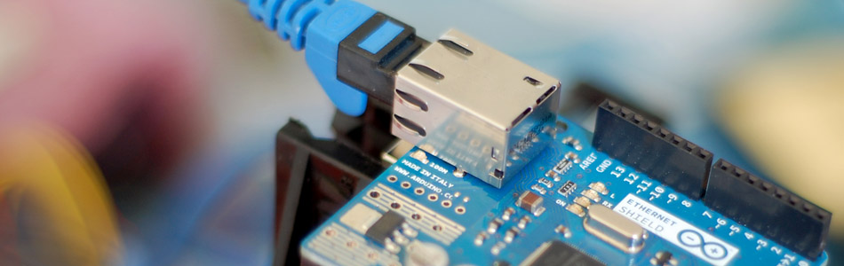

Getting Data From The Web - Arduino + Ethernet

The ethernet shield can be used to access any non-password protected site with ease, but getting the information back to you is the hard part. For Twixie I created a special php page that queried the twitter API and displayed only the twitter count. This made it so I didn't have to tell the arduino what to look for, or scour endless lines of HTML looking for a single number. For our example im going simplier. I created a PHP file that just outputs a random alphanumeric string. I did this because getting everyone setup with an API account somewhere is beyond the scope of this article, and unneeded to prove the concept and get you started. But, the idea is that you could easily take that PHP file (any web accessible file) and taylor it to display whatever you need.
In the client mode, the ethernet shield is able to access a webpage and return what is read. But the reading is done one byte at a time, and it reads the entire thing. So it can be like a needle in a haystack on large pages. Even if the page we are reading contains only the information we need, there is extra information at the beginning that is sent to the arduino. You never see it, but a web server actually sends extra information know as a "header" that tells the browser various information about that page (this is different than HTML's
tag).Because of this, we need a way to tell the arduino what is junk, and what is the good stuff. To do this we are going to surround the information in < >. When the Arduino starts to read the page we tell it to ignore everything until it sees "<". From this point on we tell the arduino to record each following character until it sees our ending character ">". At this point the arduino has everything it needs, and disconnects from the server then reports back with the data it found.
The Ethernet Shield library does not come with DNS support out of the box meaning we can not simply access the website we need by its simple URL (like http://arduino.cc). No, sadly, we need to have access the site through an IP address. For instance, bildr's IP address is 174.123.231.247 and you can actually access bildr like so http://174.123.231.247/~bildr/ - Not every web-server allows you to do this, but when you can it is typically IPADDRESS/~ACCOUNT_USERNAME - So you can see the PHP file I created for you here http://174.123.231.247/~bildr/examples/ethernet/
{kind=link}
Code
Without an extra library, the ethernet code does not support DHCP and therefore requires that we hardcode the IP Address, gateway address, and subnet mask for your network. This isn't really that hard, it is more of a pain when especially if you want to plug it into a different network as the same settings may not work.
If you are familiar with your network and how to do this, awesome, just make sure you change the setting at the top of the code to fit your network. If you are not familiar with it, we can help you in the forum, and have posted some general help in there as well.
As of Arduino 1.0, DHCP is supported, so this should be able to just plug into most networks and start working.
NOW 1.0 COMPATIBLE
#include <Ethernet.h> #include <SPI.h> //////////////////////////////////////////////////////////////////////// //CONFIGURE //////////////////////////////////////////////////////////////////////// byte server[] = { 174,123,231,247 }; //ip Address of the server you will connect to //The location to go to on the server //make sure to keep HTTP/1.0 at the end, this is telling it what type of file it is String location = "/~bildr/examples/ethernet/ HTTP/1.0"; // if need to change the MAC address (Very Rare) byte mac[] = { 0xDE, 0xAD, 0xBE, 0xEF, 0xFE, 0xED }; //////////////////////////////////////////////////////////////////////// EthernetClient client; char inString[32]; // string for incoming serial data int stringPos = 0; // string index counter boolean startRead = false; // is reading? void setup(){ Ethernet.begin(mac); Serial.begin(9600); } void loop(){ String pageValue = connectAndRead(); //connect to the server and read the output Serial.println(pageValue); //print out the findings. delay(5000); //wait 5 seconds before connecting again } String connectAndRead(){ //connect to the server Serial.println("connecting..."); //port 80 is typical of a www page if (client.connect(server, 80)) { Serial.println("connected"); client.print("GET "); client.println(location); client.println(); //Connected - Read the page return readPage(); //go and read the output }else{ return "connection failed"; } } String readPage(){ //read the page, and capture & return everything between '<' and '>' stringPos = 0; memset( &inString, 0, 32 ); //clear inString memory while(true){ if (client.available()) { char c = client.read(); if (c == '<' ) { //'<' is our begining character startRead = true; //Ready to start reading the part }else if(startRead){ if(c != '>'){ //'>' is our ending character inString[stringPos] = c; stringPos ++; }else{ //got what we need here! We can disconnect now startRead = false; client.stop(); client.flush(); Serial.println("disconnecting."); return inString; } } } } }
The example php file. This just creates a random alpha-numberic string like <1Hc2f>
<?php //the arduino will store anything between '<' and '>' //So if the output was <1kjhghk5> - the arduino would read 1kjhghk5 //Just generates a random alphanumeric string $what_the_arduino_reads = '1'.base_convert(rand(10000,9999999), 10, 36); echo '<'.$what_the_arduino_reads.'>'; ?>
Article taken from bildr.org with minor changes - I am the original author of this content